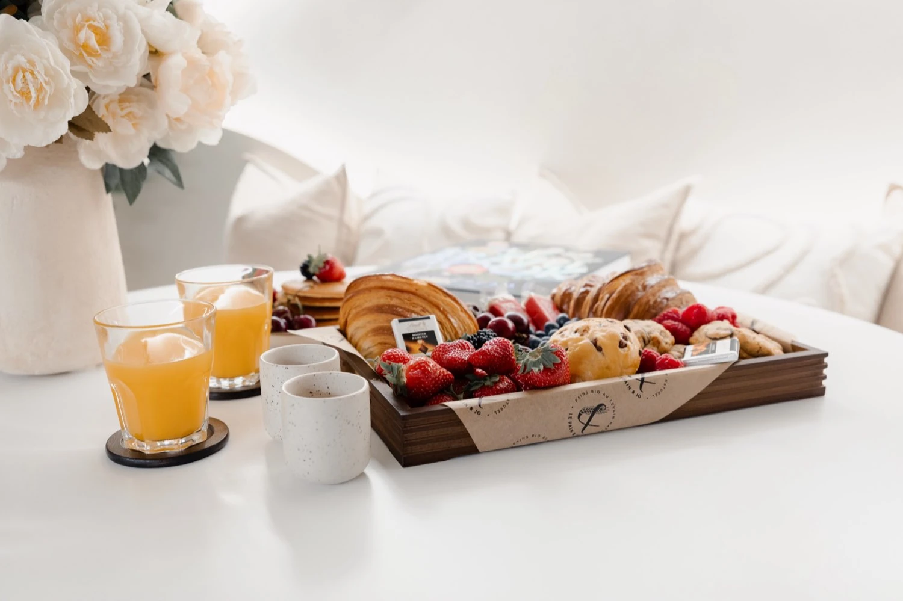
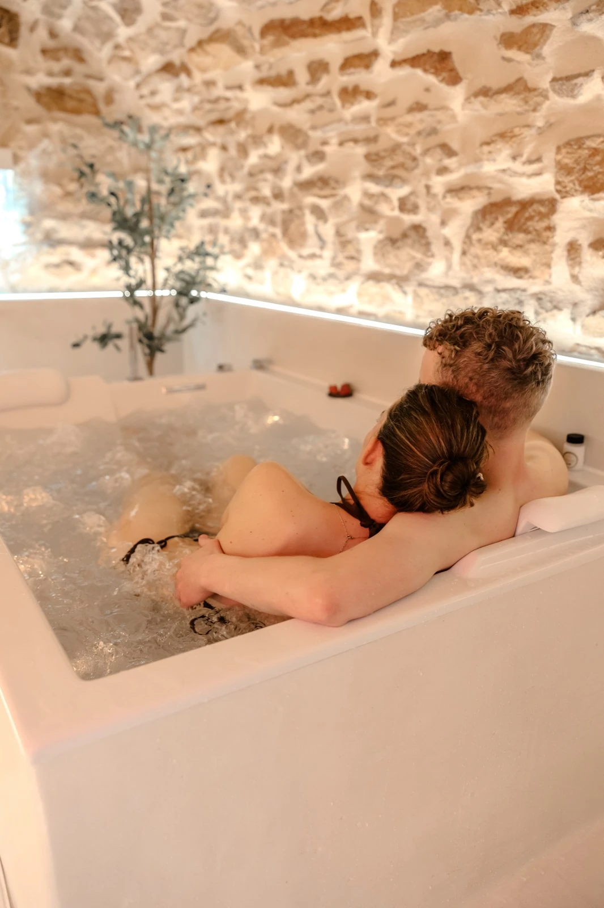

Les enfants chez les grands-parents,
vous, nulle part d'autre à être.
Du 19 décembre 2026 au 4 janvier 2027, les vacances scolaires de Noël ne se résument pas aux listes de cadeaux et aux repas de famille à rallonge. Entre deux réveillons, une parenthèse à deux, loin de tout, fait aussi partie des traditions qui méritent de s'installer.

Décembre impose son rythme : cadeaux à trouver, repas à organiser, famille à voir. Les vacances scolaires qui suivent Noël sont souvent pensées comme une suite logique de l'agitation des fêtes — sauf qu'entre le réveillon du 24 et celui du 31, il reste des jours à soi. Des jours où les enfants sont chez les grands-parents, où les cadeaux sont déjà ouverts, et où plus rien n'oblige à rester chez soi.
Une pause, pas une suite des réjouissances
Beaucoup de couples profitent justement de cette fenêtre pour faire l'inverse de ce que décembre leur a demandé jusque-là : ne rien organiser, ne recevoir personne, et se retrouver sans autre programme qu'un bain à remous qui chauffe et une porte qui ferme à clé.
Ce que la voûte change en plein hiver
Sous la pierre ancienne, l'hiver prend une autre allure : nuits plus longues, envie de ne rien faire d'autre que se prélasser, petit-déjeuner servi sans réveil ni horaire. La suite est pensée pour ces journées sans contrainte, entre le spa balnéo et la douche sensorielle.
Les dates à connaître
Les vacances de Noël 2026-2027 sont communes à toute la France : elles commencent le samedi 19 décembre 2026 après la classe et se terminent le lundi 4 janvier 2027, jour de la rentrée. Deux semaines complètes pour caler une nuit, en semaine comme autour d'un week-end.
Pourquoi ne pas attendre pour réserver
Les nuits situées entre Noël et le Nouvel An comptent parmi les plus demandées de l'année : elles concentrent à la fois les couples en quête d'une parenthèse et les familles profitant des vacances pour se faire plaisir à plusieurs. Pour une date précise sur cette période, mieux vaut consulter les disponibilités dès maintenant.
Ce qui est inclus
- Un logement entier pour deux personnes, pas une chambre partagée
- Un spa balnéo privatif, sous une voûte de pierre ancienne
- Une douche sensorielle et une pièce secrète
- Villefranche-sur-Saône, à 40 minutes de Lyon
Notre positionnement
La Voûte des Sens se réserve directement en ligne, aux mêmes conditions que n'importe quelle autre nuit de l'année. Voir les disponibilités.
Questions fréquentes
Les vacances de Noël sont-elles une bonne période pour une escapade en couple ?
Oui. Entre un réveillon en famille et la reprise de janvier, beaucoup de couples profitent d'une journée creuse de ces deux semaines pour poser leurs valises ailleurs, le temps d'une nuit, pendant que les enfants sont chez les grands-parents ou que tout le monde est de toute façon en vacances.
Quelles sont les dates des vacances de Noël 2026-2027 ?
Les vacances de Noël 2026-2027 sont communes aux trois zones scolaires françaises : elles débutent le samedi 19 décembre 2026 après la classe et se terminent le lundi 4 janvier 2027, jour de la rentrée.
Faut-il réserver longtemps à l'avance pour les jours entre Noël et le Nouvel An ?
Oui. Les nuits situées entre le 25 décembre et le 1er janvier comptent parmi les plus demandées de l'année : mieux vaut consulter les disponibilités dès que la période vous intéresse plutôt qu'au dernier moment.

La Voûte des Sens
Une voûte de pierre,
deux personnes.
Balnéo privative, douche sensorielle et pièce secrète, à Villefranche-sur-Saône, à 40 minutes de Lyon. 5,0/5 sur 20 commentaires.